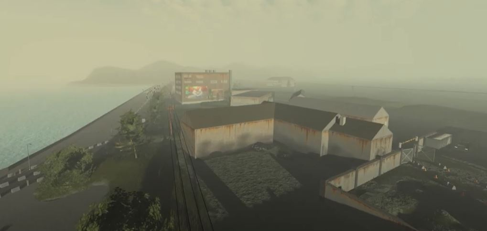

I am glad to say that the game has been finished, with 95%+ bugs been removed!
Play Today and explore the huge map and complete the missions which await you.
Mucky Driver is a offroad styled game where you play with numerous amount of different varieties of vehicles.
Explore the large vast world which is now in the ruins from the past natural disaster which was a tsunami! It is your job to explore the land,
and take ownership of all the vehicles. However, don't forget about the obsticles around the map, there can be sticky mud puddles and deadly waters which can drown your vehicles.
The choice is yours how you play the game:
There are multiple missions to be completed, to then be awarded if successfully completing one of them.
Please come and play with all the other players which are roaming today on your needing land, and explore what could be yours to explore today.
Thanks, now go and try the game out!

Mucky Driver Development Feature Video 24.5 Update
▶ Watch
Please come back another time after it has been completed, when complete the game will be completed as well.